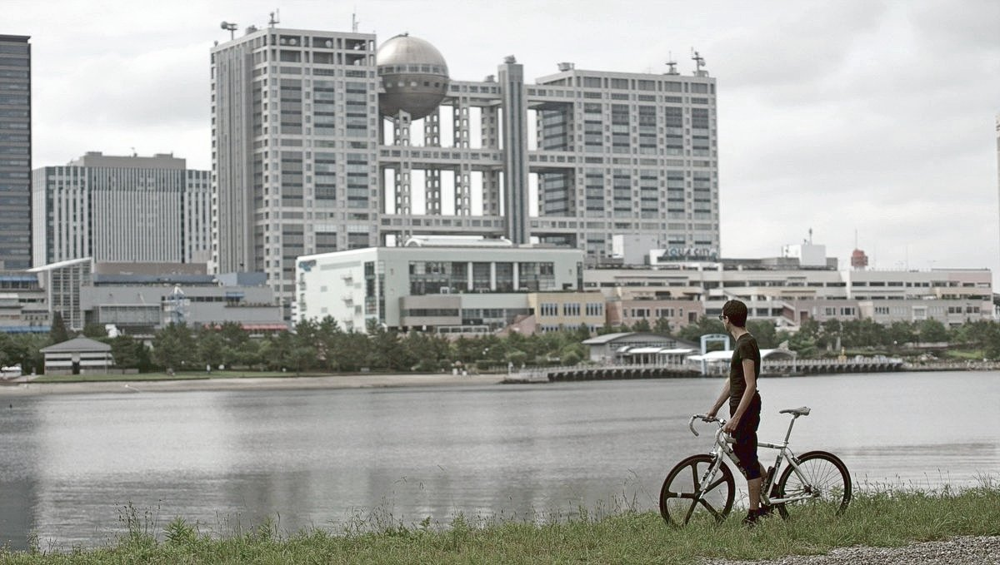
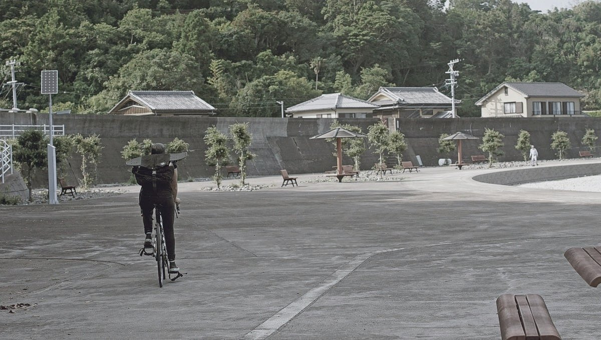
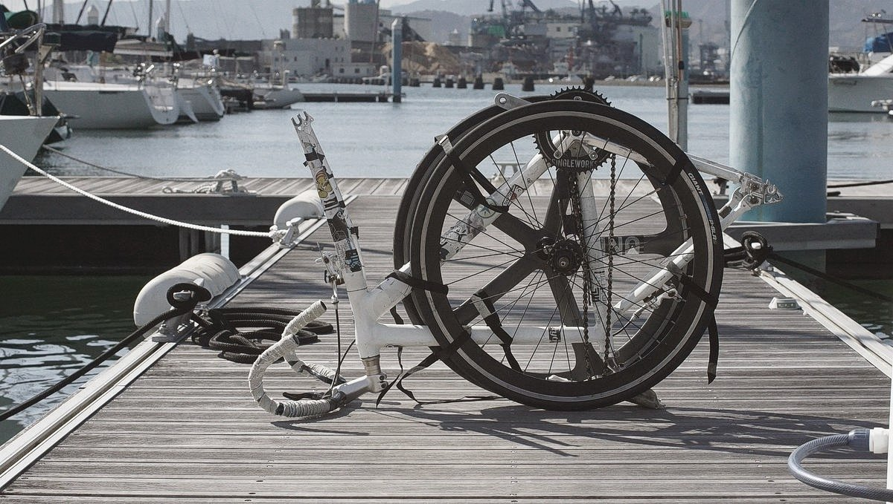
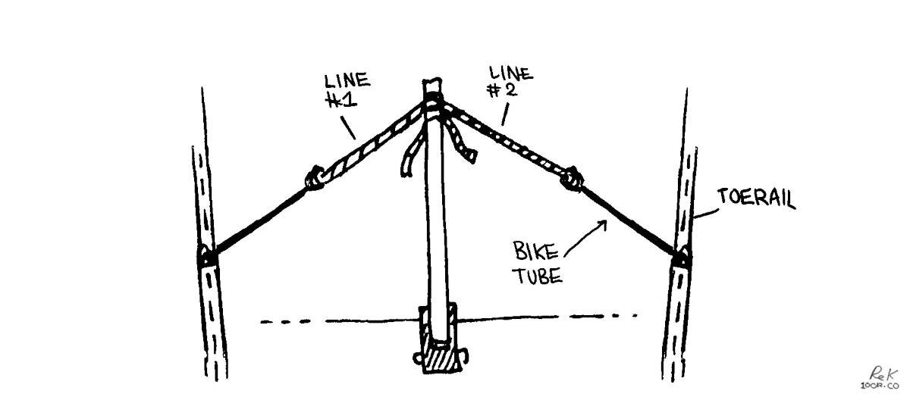

bikes
We carry two full-sized single-speed(fixed) road bikes aboard. These bikes have traveled far with us. We crossed oceans with them aboard our boat, and did not regret bringing them along.
We use them to fetch parts, groceries, etc.
bikes on a boat
Bike tool essentials:
Note that we have single speed bikes(no derailleurs). We chose leaner bikes because we knew we'd be taking the wheels on and off often to store them onboard.
- Tire levers
At least two, for replacing perforated tubes. - Spare tubes
Check valve length and your wheel diameter. - Floor pump with gauge
Always fill tube at recommended PSI on tire, otherwise you run the risk of getting frequent flats. - Hex wrench set
A set that fit all the hardware on your bike, for adjusting seat, pedals, wheels, etc - Open end wrenches
A set that fit the hardware on your bike - Tube patch kit
- Chain breaker
Chain removal is necessary for cleaning it. - Presta to Schrader valve converter
If you have presta valves carrying a converter improves chances of getting tire pumped in an emergency, even at a gas station.
There are many more tools to get if you wish to do a full bike tune-up, but in all these tools are way fine for most people, and it is what we carry aboard Pino.
Note: Keep some old bike tubes, they are useful for self-steering a boat at sea (instead of using bungees). We used them a lot on long ocean passages because we didn't have a windvane, or an autopilot. See Thoughts, Tips and Tactics for Singlehanded Sailing by Andrew Evans(it's free) for more information on steering a boat with bungees (or bike tubes).
Do the bikes rust? No, our bikes don't rust, the frames are aluminum(forks are carbon) and we keep the steel chains and hubs well-oiled(3 in 1 oil). Always apply lube to a dry chain.
Where do you keep your bikes?. When in port for a long time, we keep them outside, locked to a strong point on the boat. When we move the boat, or during the winter/rainy season, we stow them inside. We stow the bikes inside in either the v-berth, or quarter berth. The best way to stow them is to take both wheels off, to remove the pedals, turn the handle bars sideways, and to tie all components with straps. We cover the bikes with a bike bag.
The bags are nothing special, but allowed us to carry them with us aboard trains while in Japan.